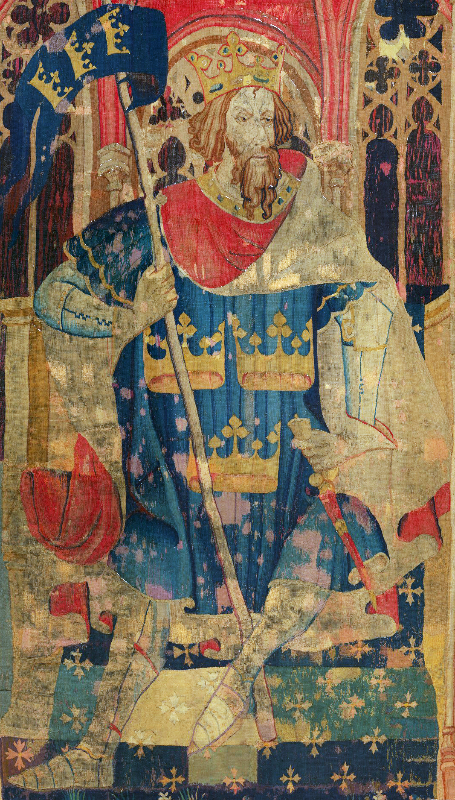

Hello, world! My name is Dominic.
This is a webpage all about me, my likes, dislikes, hopes, dreams, and favorite things
Biography
I am a highschool student that enjoys Japanese cartoons and literature, in fact, I enjoy more than just literature. I am a culture nerd. I completely love mythology as well as folklore of different places. From the tales of King Arthur, to the Olympians of Greek Mythology, to the Kami of Japanese religion, Shinto, I enjoy it all.
My Favorite Quotation.
"Wait and Hope" - Alexandre Dumas "The Count of Monte Cristo"